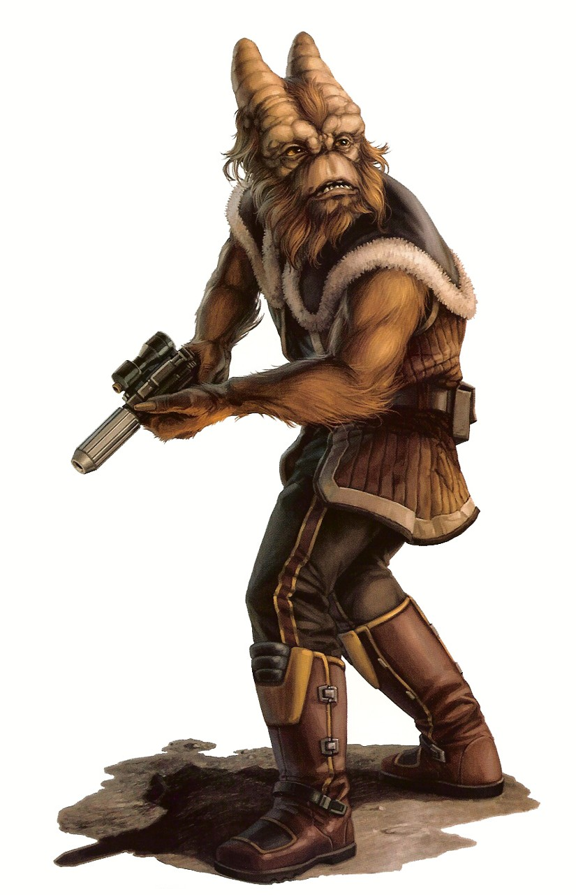

Gotal
Special Abilities: Gotals begin the game with one rank in Perception. They still may not train Perception above rank 2 during character creation.
Energy Sensetivity: The head cones of a Cotal are finely tuned sensory organs used to detect almost the entirety of the electromagnetic spectrum. Once per encounter as a maneuver, a Cotal may sense the presence and current emotional states of all living things within short range of himself.
The shaggy-haired Gotals are an empathic race of many talents and a benevolent nature. They possess the extraordinary ability to detect and interpret almost every manner of energy field, which allows them to sense the moods and well-being of nearby living beings.
Gotals are tall, burly humanoids that evolved as hunter-gatherer tribes on the harsh plains of Antar 4. A coarse, dense layer of fur covers these rugged bipeds in shades ranging from sandy brown to smoky gray. Tiny vestigial nostrils, a pair of beady red eyes, and a wide grimace adorn their gristly, elongated faces. From their heavily knobbed brow sprouts a pair of conical bovid horns packed with millions of nerve clusters sensitive to electromagnetic fields, radio waves, and numerous other forms of energy. Gotals use their energy-detecting horns as their primary sensory organs, since the peculiar conditions of their moon make it difficult to function by sight alone.
Gotals use their energy sensitivity to detect the presence, mood, and general wellbeing of nearby living creatures through their electromagnetic aura. On their home, Gotals employ this sensitivity to stalk herds of quivry and other prey-beasts with ease. Their ability to discern the emotions of others through brain wave patterns and other electromagnetic emanations forms the basis of their entire way of life.
Antar 4’s harsh, unpredictable environment (caused by its complex orbital cycle within a binary star system) forced the Gotals’ primitive ancestors into a nomadic lifestyle. Limited success with planting crops meant the hunter-gatherers of early Gotal civilization had to follow herd beasts during their migration in order to survive. Gotal hunters used their remarkable ability to detect herds and could discern the type, number, and well-being of animals with astonishing accuracy. Although Gotal settlers have since established several cities around their world, some Gotals reject the settlers’ lifestyle and honor their ancestral traditions by roaming the Antarian plains. These rugged folk roam the highlands and valleys and seldom encounter settlement dwellers in cities like the sprawling Baal Commune.
The Gotal’s ability to decipher the emotional state of others using their energy-sensitive horns played a central role in shaping their society. Their proficiency at detecting anger and discomfort produced a natural aversion to conflict; therefore, Gotals live free of any established government and maintain a peaceful anarchy. Awareness of the emotions of everyone around them makes courting rituals unnecessary, and Gotals often fall in love at first sight, remaining monogamous for life. Gotals are typically polite and discreet in their social interactions, avoiding expressing negative opinions to keep from upsetting others. There are exceptions, however, and some Gotals use their abilities to take advantage of others, often leaving their world to pursue lives of crime.
Gotal children are abrasive and temperamental. From birth, Gotals endure bombardment of every conceivable form of energy emission, unable to filter the incoming stimuli. The sensory overload leaves them helpless, sometimes-causing catatonia or delirium. After infancy, Gotals start learning to cope with their ability, but they still struggle with bouts of instability until they reach maturity around twelve years of age.
Although Gotals struggle with the electromagnetic interference given off by electronic devices, they have adapted and achieved space travel capabilities using technology employing emission-free chemical reactions. Gotals used this technology to explore the other moons and planets of their solar system long before encountering other species, and they even established mining outposts on Antar 5 to advance their civilization. Gotals have had millennia to adapt to the overwhelming energy fields wrought by other species that lack their unique abilities, but they continue to struggle with droid technology. Power sources used in most modern droids emit an energy pattern that causes Gotals particular discomfort, which has created an anti-droid sentiment within Gotal society.
Antar 4 is one of six moons orbiting a gas giant in the binary star system known as the Antar system. The complex orbital pattern of moons, planet, and suns causes erratic weather patterns and a constantly changing diurnal cycle. Antar 4 lies along the Nanth’ri Trade Route in the Inner Rim. Antar 4’s land mass consists primarily of breezy grass plains and rocky steppes, but over sixty percent of the moon’s surface is covered in oceans, rivers, and streams. Despite the cool climate, Antar 4 lacks polar ice caps due to a bizarre rotational pattern caused by its steep axis along the Antar system’s orbital plane. This abnormal angle causes extreme tidal shifts that wrack the moon with harsh weather conditions as its seasons change.
Frequent eclipses caused by the Antar gas giant and its other moons subject Antar 4 to a highly variable diurnal cycle. At times, Antar’s twin stars, along with the reflectivity of the gas giant’s atmosphere, bathes the entire moon in sunlight that is so bright that it would scorch the optic nerves of most species. Other times, the planet moves between its double stars and this moon, plunging Antar 4 into total darkness. Between these two extremes, the Antarian moons provide varying radiance and wavelengths of illumination for the Gotal homeworld after nightfall. This wild orbital behavior makes it difficult for anything other than hearty, fast-growing plant life to take root.
Antarian primarily relies upon the reading of brain waves and electromagnetic auras to decipher emotions and basic concepts, and supplements this with speech used to convey abstract or complex ideas. To other species, the vocalization of Antarian sounds like a gurgled monotone, but to Gotals it has breadth and inflection thanks to the ever-shifting modulation created by the moods and thoughts of those around them. Due to their ability to detect these emotions with their horns, the Gotal language has no words to express concepts like happiness or sadness. The extra sense Gotals use to communicate makes it impossible for other living beings to speak Antarian fluently.
Gotals speak Basic to interact with other species, but using vocalized speech to express emotion is a concept too foreign for most Gotals to grasp. Therefore, when Gotals use Basic, they speak in neutral terms devoid of any emotion or emphasis. This dull monotone often brings the sincerity of Gotals into question. Superstition that Gotals can read minds also leaves non-Gotals unsettled, widening the rift between species.
Gotals have traveled the space lanes for millennia and can be encountered anywhere in the galaxy. Gotals can detect virtually every known frequency of the electromagnetic spectrum, which affords them advantages that make them well suited for a wide variety of careers. Their natural tendency to avoid conflicts makes them excellent business beings, diplomats, negotiators, and politicians. Gotals also frequently enter careers as counselors and psychiatrists due to their proficiency with reading brain waves and sensing emotions.
For centuries, the Antarian Rangers served as a paramilitary force tasked with assisting the Jedi Order. Rangers were non-Force sensitive beings who performed duties ranging from exploration to resupply, also acting as a provisional fighting force when diplomacy failed. The Antarian Rangers’ ranks consisted of species from all over the galaxy, but the organization originated on the Gotal home of Antar 4.
A Gotal named Kaskutal and Jedi Master Marus Timpel founded the Antarian Rangers 620 years before the Battle of Yavin. Kaskutal possessed limited talent with the Force, but the Jedi Order rejected him for training. Undeterred from helping the Order, Kaskutal used his connections to establish a much-needed logistics chain for the Jedi, raising funds to provide supplies and transports. This initiative grew to a galaxyspanning organization comprised of thousands of beings filling essential support positions for the ever-vigilant Jedi.
The prolonged and bloody conflict of the Clone Wars thinned the Rangers’ ranks alongside the Jedi they served. After the Declaration of the New Order, the Empire declared the Antarian Rangers co-conspirators with the Jedi Order and hunted them to near-extinction. Any survivors slipped into the shadows to escape extermination.